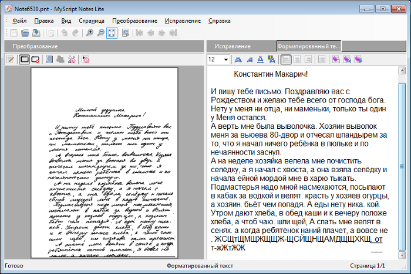

"Оффлайн" распознавание
Оптическое распознавание символов
– это механический или электронный перевод изображений рукописного,
машинописного или печатного текста в текстовые данные, использующихся
для представления символов в компьютере

Список проблем:
-
высокая вариативность начертания символов — по размеру, наклону, набору составных частей, связям между ними и др.;
-
орфографические ошибки в тексте;
-
специфические особенности начертания, не позволяющие уверенно разделять символы;
-
пересечение элементов текста, наложение частей текста друг на друга;
-
помарки, кляксы, исправления, дефекты носителя (бумаги), а также артефакты, возникающие при сканировании;
-
непараллельность и неровность строк текста;
и другие.
Методы оффлайн-распознавания последовательностей рукописных символов:
1) Предварительная обработка изображения: На этом этапе происходит обработка изображения с целью повышения его качества и приведения его к виду, удобному для сегментации.
2) Сегментация: На этом этапе происходит выделение текста на изображении и его разделение на составные части. Обычно текст обрабатывается иерархически: сначала выделяются отдельные строки, затем отдельные слова, затем символы или части символов.
3) Извлечение признаков: На этом этапе формируются признаковые описания выделенных на этапе сегментации частей
Принято
делить признаки на 3 класса:
-
Статистические — признаки, хранящие информацию о распределении пикселей на изображении. Это могут быть средние значения пикселей, гистограммы яркости, профили проекции изображения.
-
Геометрические — признаки, хранящие информацию о геометрических свойствах объекта. Сюда относятся площадь и длина контура объекта, выпуклости, вогнутости и т.д.
-
Структурные — признаки, описывающие структуру объекта, т.е. наличие составных частей и связей между ними. Сюда может относиться наличие / отсутствие петель, дуг, прямых линий и связей между ними.
4) Классификация: На этом этапе по признаковым описаниям, построенным на этапе извлечения признаков, система принимает решение о том, к какому заранее известному классу отнести выделенный на этапе сегментации элемент.
5)
Обработка результатов:
На этом этапе происходит построение итогового текста по результатам
классификации выделенных частей текста.
Этот вид распознавания считается более сложным по сравнению с онлайновым. Для оффлайного распознавания требуется обучение системы распознавания человеком или готовая обучающая выборка.
Качество распознавания можно повысить, используя структурированные документы (формы). Кроме того, можно улучшить качество, уменьшив диапазон возможных вводимых символов.
Применяется в сферах деятельности, где
необходимо обрабатывать большое количество рукописных документов, к
примеру, в страховых компаниях.